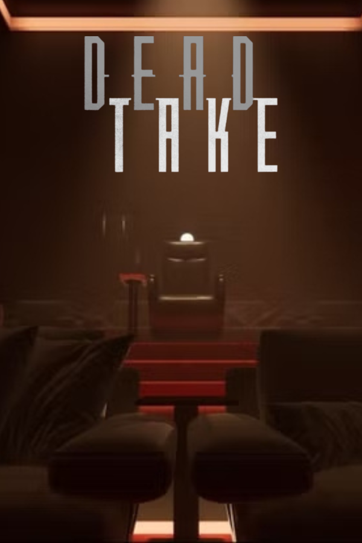

Dead Take
Every archived year-end list appearance, including placement and points earned.
About the Game
EXT. MANSION - NIGHT "FIND VINNY"Night falls and he still won't pick up the phone. You arrive at the mansion: the last place he went. It's oddly quiet for the site of a glamorous party the night before. Your invite must have gotten lost in the mail. In any case, you make your way inside to find your friend.Actors have to look out for each other in this industry.Feed me something realINT. MANSION - NIGHT "PLAY YOUR PART"An abandoned film set. A broken home cinema. Searching the mansion and unlocking its secrets requires the fullness of your ingenuity. Pay attention.INT. HOME CINEMA - NIGHT "A SPLICE OF LIFE"Your search reveals a number of USB drives and memory cards containing corrupted video files. Some can be spliced together to reveal what really happened within these walls. Try not to lose yourself in your work.INT. HEART OF HOLLYWOOD - NIGHT "TAKE YOUR SHOT"The house is watching. It seems to haunt your steps. Piece together what really happened last night as you discover a side of the entertainment industry only discussed in whispers.The cruelty. The sordid gossip. The auditions gone wrong. The shadowy figure with the power to make or break your career.There's only one way to guarantee your success: feed me something real.
| Developer | Surgent Studios |
|---|---|
| Publisher | Pocketpair Publishing |
| Genres | Adventure, Indie |
| Platforms | PC |
SingleplayerSteam AchievementsFull controller supportSteam CloudAtmosphericStory RichFirst-PersonHorrorExplorationDarkSurvival HorrorMystery
Where to Buy
Game information provided by RAWG.
Points by Year
List History
| Year | Source | List | Placement | Points |
|---|---|---|---|---|
| 2025 | GameSpot | The Best Games Of 2025 | Unranked | 1 |